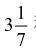
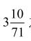
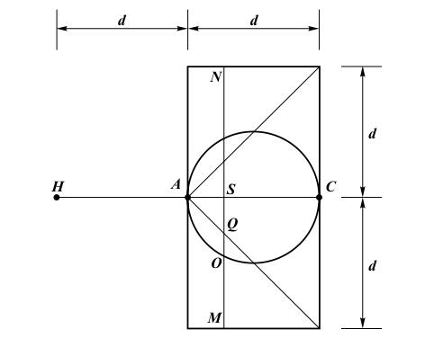

这时候，城头的弓箭手们抄起老人设计的外号叫作“蝎子”的快弩，朝着峭壁下的罗马士兵发射短而尖利的铁钉。铁钉雨点般钻入敌群，没有片刻停息。罗马士兵被迫躲在盾牌后面，不敢抬头。
罗马人的攻击停止了，城头上欢声雷动。
这时，一个全副武装的甲士跑到埃披库代斯面前，上气不接下气，脸色苍白：“将军，罗马人正从东面由陆路进攻！”
埃披库代斯和老人火速奔向城东。
罗马大将军、元老院议员普尔凯尔（Appius Claudius Pulcher，生卒年不详）率领的罗马步兵推动装有轮子的巨大塔屋和能伸能缩的梯子，正在接近城门。老人和埃披库代斯来到这里，立即指挥启动投石机和石炮，猛烈的火力使敌人还没靠近城墙就遭受很大损失。顽强的罗马人不屈不挠，以惨重的代价终于推进到距离城墙一百多米的地方。这时，城墙突然张开无数楔形的箭孔，这些箭孔外面小、里面大，从中射出铺天盖地的箭雨，转眼之间罗马士兵又成片地倒下去。那些带轮子的攻城机也被巨石砸烂，如同海中的攻城机一样。还有一些罗马士兵被铁爪抓到空中，然后被重重地丢下去。
这时，老人挥手示意，守军把所有的机器全都搬了出来，大大小小各式各样的石炮、投石机同时发射，一场石块和石弹的暴雨呼啸着铺天盖地砸向敌人。声音之大、力量之巨，真是摧枯拉朽，势不可挡，罗马人难以招架，乱成一团。城头、城内，叙拉古人欢呼跳跃，大声喊着老人的名字：
“阿基米德！阿基米德！”
欢呼声震天动地，沿着辽阔的海面向四周传播出去，经久不息。
这场战争发生在公元前213年。那时，阿基米德（Archimedes， 约公元前287 –公元前212）已经七十四岁了，早已从亚历山大里亚学成，回到了故乡叙拉古。
虽然阿基米德以发明奇巧的机器闻名后世，他自己对这些发明却嗤之以鼻，甚至深恶痛绝，因为这些杀人的工具同科学的目的背道而驰。关于这些发明，他没有留下任何文字，他的真正兴趣在于数学、力学和天文学。阿基米德比中国的祖冲之还要早七百年就对圆周率做了深入的研究。为了确定圆周率π，他把圆切成若干相等的三角形，利用逐渐逼近
的方法得出结论：π的数值一定是在

和
之间。≈3.142 857 14，≈3.140 845 07，而我们今天知道，π≈3.141 592 654。而且，利用阿
基米德的方法，我们可以求到π的任意位小数。
找到了π，阿基米德接着寻找球体的体积公式。他的做法极其富有创造力，我们不妨仔细研究一下。请想象分别有一个圆柱、一个圆球和一个圆锥。圆柱的高和圆球的直径（d）相等，圆锥底面的直径与圆柱底面的直径相等，都是2d。阿基米德已经知道，圆柱的体积是πd3，圆锥的体积是 d3。他把三个物体重叠画出来，如图10所示。现在他作一个任意的垂直于轴线AC的截面MN。由于轴对称性，他看到，只需要把图10当作平面几何来处理，然后绕着HC轴旋转就能得到三维的解。

图 10：三个物体的剖面图。注意这三个物体对于轴 HC 具有轴对称性
在图10的平面上，阿基米德已经知道——
（AS）（SC）＝（SO）2 （6a）
这是个简单的几何问题。（还记得双比例中项的问题吗？请想象出一个以AOC为顶点的三角形，由于圆内任何一个以圆的直径为边的三角形都是直角三角形，所以我们自然就可以推出AS/SO=SO/SC的结论。如果你对这个问题感到困惑，请再次阅读本书的第三章。）然后，他开始利用几何知识进行下面的简单的代数运算。阿基米德是使用语言来描述他的运算结果的，以下是其运算用现代的代数符号的表达：
在等式（6a）两边同时加上（AS）2，得到：
(SO)2+(AS)2=(AS)(SC)+(AS)2=(AS)[(SC)+(AS)]=(AS)(AC)
参考图10我们可以一目了然地发现：
因此这个等式也可以转化为：
(SO)2+(AS)2=(AS)(AC)（6b）
现在考虑到三个物体的轴对称性，在等式（6b）两边同时乘以
( AC )π，得到：
(AC)[π(SO)2+π(AS)]=(AS)π(AC)2（6c）
参考图10，我们可以发现，（AS）=（SQ）（我们在图10中可以找到六个三角形，并且可以证明它们彼此都是相似三角形，也都是等腰直角三角形，故此三角形ASQ的两个直角边长度相等），从图上我们还可以一眼看出 （AC）=（SM），所以（6c）就变成了：
(AC[π(SO)2+π(SQ)2])=(AS)π(SM)2（6d）
这个式子里包含通过截面MN的球体、圆锥和圆柱的截面面积
π( SO )2、π( SQ )2和π( SM )2。
下一步，阿基米德做了一个令后人意想不到的事情。他说，让我们假设这三个物体是用同样的材料做成的，具有同样的密度（或比重）ρ，再假设这三个截面具有同样的厚度Δ。在（6d）两侧同时乘以ρΔ，
(AC)[π(SO)2ρΔ+π(SQ)2ρΔ]=(AS)π(SM)2ρΔ （6e）
这时，阿基米德沿着轴线AC作延长线AH，使AH=AC，于是把（6e）改写成：
(AH)[π(SO)2ρΔ+π(SQ)2ρΔ]=(AS)π(SM)2ρΔ（6f）
因为π( SO )2、π( SQ )2和π( SM )2是通过截面MN的球体、圆锥和圆柱的截面面积，把它们都乘以Δ以后就变成了厚度为Δ的三个圆盘（或非常短的圆柱体）的体积。体积乘以比重是重量（更精确地说，我们今天叫作质量）。（AH）和（AS）是距离。现在，让我们回想一下物理中的杠杆原理，式（6f）的含义是什么？
阿基米德的思路从几何跳到代数，然后又跳到物理。在他看来，（6f）对应着一个物理问题：如果把一个半径为AC、厚度为Δ的圆盘挂在C点，那它必定跟同时挂在H点的两个厚度为Δ的圆盘达到平衡。这两个圆盘的半径分别是SO和SQ。我们不妨想象一下，HC是一根杠杆，支点在A。半径为SM的圆盘悬挂在S点；在H点用一根长线，拴住半径分别是SO和SQ的圆盘的中心，一上一下，杠杆就达到平衡了。至于这两个圆盘哪个在上哪个在下，并不重要。这个问题对于阿基米德来说，太熟悉了。他曾经讲过一句非常有名的话：“给我一个支点，我就能撬动地球！”
由于点S是在线段AC上的任意一点，所以式（6f）对线段AC上的每一点都成立。阿基米德进一步论证说，现在我们把线段AC切割成若干相等的小段，每一段的长度是Δ。既然（6f）对每个小段（长度以S来表示）都适用，我们把所有的小段从S=0（A点）到S=d（C点）都加起来应该也适用。这个过程，我们叫作求和。对于等式（6f）中的三个圆盘来讲，求和的结果是得到圆球、圆锥和圆柱的近似体积。我们可以想象把线段AC分割成越来越多的小段来求和，直到Δ小到使求和的近似体积完全等于三个立体的真正体积。由于圆柱的对称性，求和的结果相当于把整个圆柱悬挂在线段AC的中点。于是我们得到圆球（V球）、圆锥（V锥）和圆柱（V柱）之间的体积关系：
（V球+V锥）＝ V柱 （6g）
有了这个关系，圆球的体积就可以求出来了。不仅如此，知道了球的体积，球面的面积也可以得到。请读者自己想一想，为什么？怎么求得？
以上是阿基米德为了验证自己的结果而采取的思路。数学上更为完整的证明方法还是几何学，我们就不详细介绍了。他的切割、求和的思路包含了微分和积分思想的萌芽，这到将近两千年以后才被牛顿、莱布尼茨等人发现并发扬光大。
阿基米德的思路，至少有两点是前无古人，并且对后人的科学研究产生了深远影响的。第一，他把数学（在他的时代主要是几何学）和物理学融合起来，看到数学背后的物理学问题和物理学背后的数学问题。这种融会贯通的思维方式使他的思路极为开阔，解决问题的思路也就多起来了。第二，他是人类历史上第一位采用“思维实验”的方式来解决数学和物理问题的。所谓思维实验，就是在脑子里利用已知的物理定律来构筑一种实验。这种实验在现实中可能由于实验条件的限制而无法达到，但是在原理上完全符合物理规律，就像上面他的杠杆平衡实验。后面这一点，后来被伽利略发挥到极致。
阿基米德给朋友留下遗嘱，希望死后在墓碑前竖立一个自己设计的纪念碑，那是一个圆柱，里面放着一个圆球。这是他最为骄傲的发现：球体的体积是其外切圆柱（球的直径与圆柱底面的直径相等，圆柱的高等于球的直径）体积的三分之二。